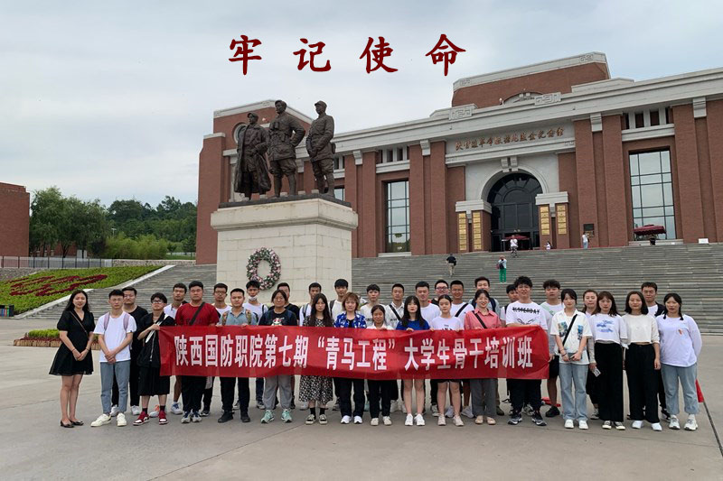

陕甘边革命纪念馆
以照金为中心的陕甘边革命根据地，是中国北方第一块山区革命根据地，为西北革命根据地的发展奠定了基础，积累了经验，踊跃出一批革命先辈。

西安事变纪念馆
全国首批百个爱国主义教育示范基地，“西安事变”发生后，中共中央派人组成代表团赴西安，就住在此旧址，与张学良、杨虎城二位将军确立了和平解决“西安事变”的方略。
以照金为中心的陕甘边革命根据地，是中国北方第一块山区革命根据地，为西北革命根据地的发展奠定了基础，积累了经验，踊跃出一批革命先辈。
全国首批百个爱国主义教育示范基地，“西安事变”发生后，中共中央派人组成代表团赴西安，就住在此旧址，与张学良、杨虎城二位将军确立了和平解决“西安事变”的方略。
欢迎您来到党史学习教育网
地址:西安市鄠邑区人民路8号
建设与运维:尚云公司技术部
手机号码:158xxxx9875
版权所有 © xxxx陕ICP备800xxxx号